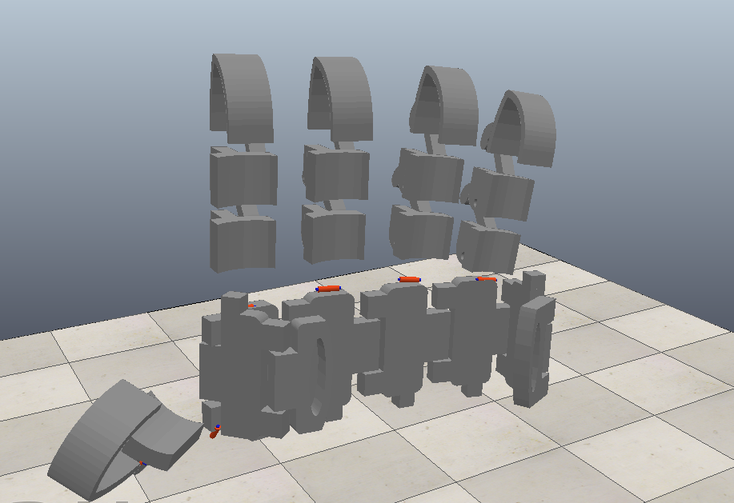

Online Estimation of Dynamics for a Loaded Quadruped to Improve MPC
[ C++ | ROS | Gazebo | MATLAB | Aliengo A1]
- Developed a LSTM architecture in MATLAB for enhancing the stability and tracking performance of an MPC controller for loaded quadrupeds during walking and trotting gaits.
- Achieved substantial improvements, surpassing the baseline MPC controller in simulation and hardware of Unitree A1 robot, with 70% increase in stability and 30% increase in tracking accuracy.
Reinforcement Learning Based control of Teleoperated System to Improve Safety
[ Simulink | MATLAB | Phantom Omni ]
- Proposed a DDPG agent based deep reinforcement learning algorithm to improve safe position and force tracking of teleoperated system.
- Attained a position and force accuracy of 98% compared to state of the art non-linear controllers while maintaining safety constraints on both Simulink and the Phantom Omni Haptic Device hardware.
Energy-Based Multi-agent Path Planning in Obstacle Filled Environtment
[ C++ | Python | ROS | Gazebo ]
- Designed an affordable 3-D printed glove technology that uses sensor fusion and a deep learning framework to convert ASL to speech via a smartphone.
- Succeeded in reducing the cost by 60% while maintaining an accuracy of 97%.

Decentralized Shape Formation and Force-Based Interactive Formation Control in Robot Swarms
[ Buzz | ARGoS | Link to Paper ]
- Formulated a decentralised shape formation algorithm resilient to failures and deformations on ARGoS using Buzz.
- Demonstrated completion of shape formation even with 30% of the agents failing.
- The paper was accepted for presentation at the 8th International Conference on Control, Automation and Robotics (ICCAR 2022)

Gesture interpreter for American Sign Language
[ Python | Kotlin | Copelia Sim | Android Studio ]
- Designed an affordable 3-D printed glove technology that uses sensor fusion and a deep learning framework to convert ASL to speech via a smartphone.
- Succeeded in reducing the cost by 60% while maintaining an accuracy of 97%.